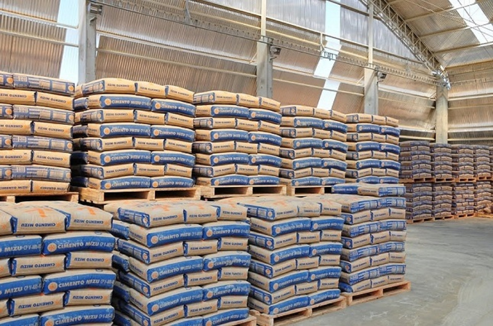

Publicado em:
Quantos sacos de cimento preciso para um piso de 50 metros quadrado
Quem está construindo ou reformando costuma se perguntar: quantos sacos de cimento vou precisar para fazer o piso? Essa é uma dúvida comum, já que o consumo de cimento depende de alguns fatores importantes, como a espessura do contrapiso e o traço da mistura. Neste artigo, você vai aprender a calcular de forma prática a quantidade necessária para um piso de 50 m².
1. Fórmula básica de cálculo
O cálculo da quantidade de cimento parte da seguinte fórmula:
- Volume (m³) = Área (m²) × Espessura (m)
- Cimento (kg) = Volume × Consumo de cimento (kg/m³)
- Sacos de 50 kg = Cimento ÷ 50
üëâ O consumo m√©dio varia conforme o tra√ßo (a propor√ß√£o entre cimento, areia, brita e água).
2. Exemplos práticos para 50 m²
üîπ Piso fino ‚Äì contrapiso de 3 cm (0,03 m)
- Volume: 50 × 0,03 = 1,5 m³
- Consumo: 1,5 × 400 a 500 kg = 600 a 750 kg
- Sacos: 12 a 15 sacos (50 kg)
- Com sobra de 10%: 13 a 17 sacos
üîπ Piso comum ‚Äì contrapiso de 5 cm (0,05 m)
- Volume: 50 × 0,05 = 2,5 m³
- Consumo: 1.000 a 1.250 kg
- Sacos: 20 a 25 sacos
- Com sobra de 10%: 22 a 28 sacos
üîπ Piso econ√¥mico ‚Äì tra√ßo mais fraco (1:4)
- Volume: 2,5 m³
- Consumo: 800 a 950 kg
- Sacos: 16 a 19 sacos
- Com sobra de 10%: 18 a 21 sacos
üîπ Piso estrutural ‚Äì concreto magro (1:3:6)
- Volume: 2,5 m³
- Consumo: 750 a 875 kg
- Sacos: 15 a 18 sacos
- Com sobra de 10%: 17 a 20 sacos
3. Resumindo os cálculos
Para um piso de 50 m², a quantidade de cimento pode variar entre:
- Contrapiso 3 cm: 13 a 17 sacos
- Contrapiso 5 cm: 18 a 28 sacos
- Concreto magro 5 cm: 17 a 20 sacos
Estimativa de custo por país
Os preços do cimento variam bastante entre os países lusófonos. Veja uma média atualizada (2025):
| País | Preço médio por saco (50 kg) | Custo total (20 sacos) |
|---|---|---|
| Brasil | R$ 35 | R$ 700 |
| Portugal | € 5,50 | € 110 |
| Angola | 8.500 Kz | 170.000 Kz |
| Moçambique | 450 MZN | 9.000 MZN |
Dicas para economizar
- Compre em grandes quantidades diretamente em distribuidores.
- Verifique a validade do cimento para evitar perda de qualidade.
- Calcule bem a espessura do contrapiso: quanto mais espesso, mais material vai gastar.
- Use uma betoneira ou misture bem para evitar desperdícios.
4. Dicas extras
- Sempre compre de 10 a 15% a mais para evitar falta de material.
- Prefira armazenar os sacos em local seco e elevado, longe da umidade.
- Consulte o pedreiro ou engenheiro responsável para confirmar o traço mais adequado para a sua obra.
Conclusão
Calcular a quantidade de cimento para o piso não é um bicho de sete cabeças. Com a fórmula simples e os exemplos práticos, você consegue estimar de forma segura. Para um piso de 50 m², o consumo varia bastante conforme a espessura do contrapiso e o tipo de mistura, podendo ir de 13 a 28 sacos.
üëâ Antes de comprar, consulte sempre um profissional e compare pre√ßos para economizar na sua obra.
üëâ Use nossa calculadora para automatizar o cálculo.